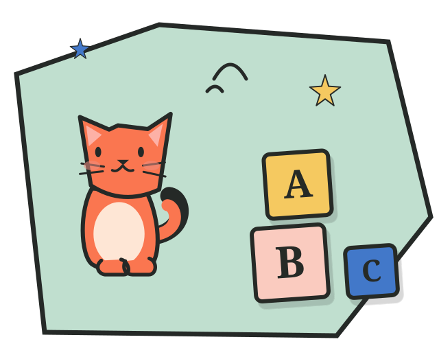

Three little
chapters.
From tiny firsts to growing independence. Explore the three age ranges listed for Little Cats Childcare LLC.
Growing, day by day.
Select an age range to see useful conversation starters. These are general questions—not a published curriculum or daily schedule.

CHAPTER 01 — 0–11 months
The very first chapter
From the earliest sounds to the first milestones, every family has its own list of questions about care.
Good things to ask
- How are feeding and rest routines coordinated?
- What should families pack each day?
- How does drop-off and settling in work?

CHAPTER 02 — 12–23 months
The wonder-everywhere chapter
New words, little steps and big discoveries make this a busy stage to plan around.
Good things to ask
- How are transitions and routines discussed?
- What should families bring for the day?
- What is the approach to play and communication?

CHAPTER 03 — 2–4 years
The try-it-myself chapter
Stories, growing independence and friendships are some of the things families may want to discuss.
Good things to ask
- How does the day balance play and rest?
- What are the expectations for independence?
- How is family communication handled?
One place to find the basics.
The current Oklahoma state record lists children aged 0–4 and a total capacity of eight, with weekday school-year operation.
Have an age-specific question?
The center can tell you about current availability.